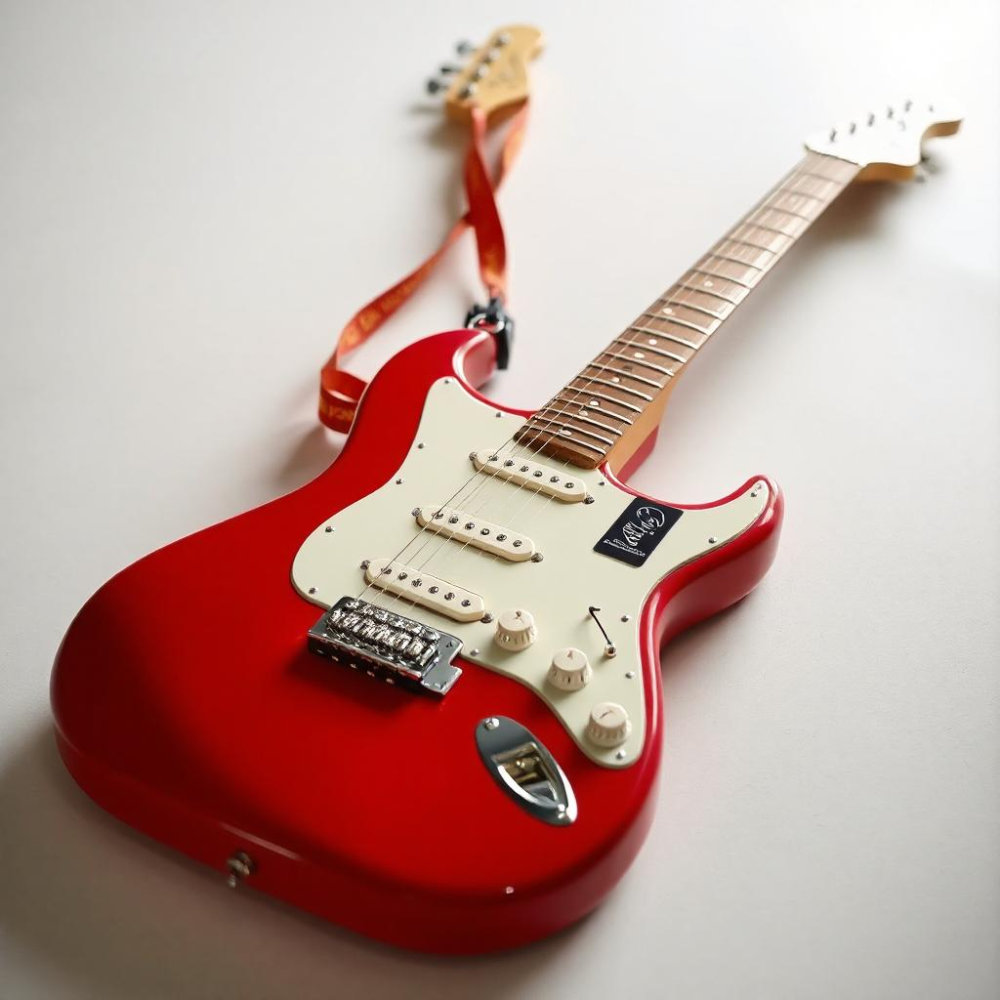
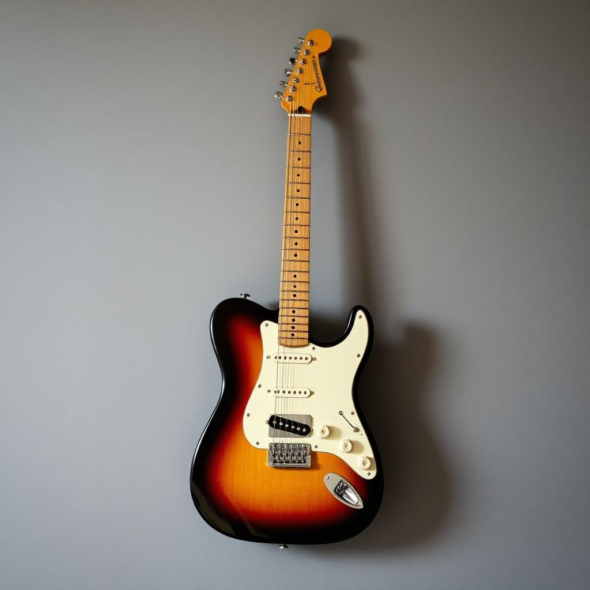
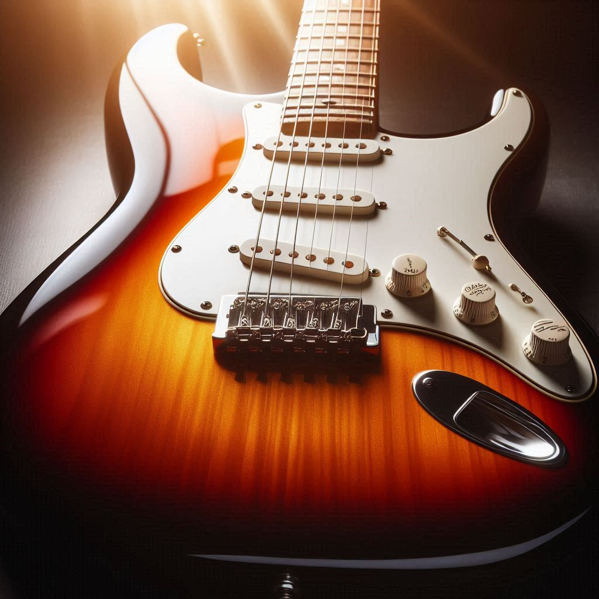
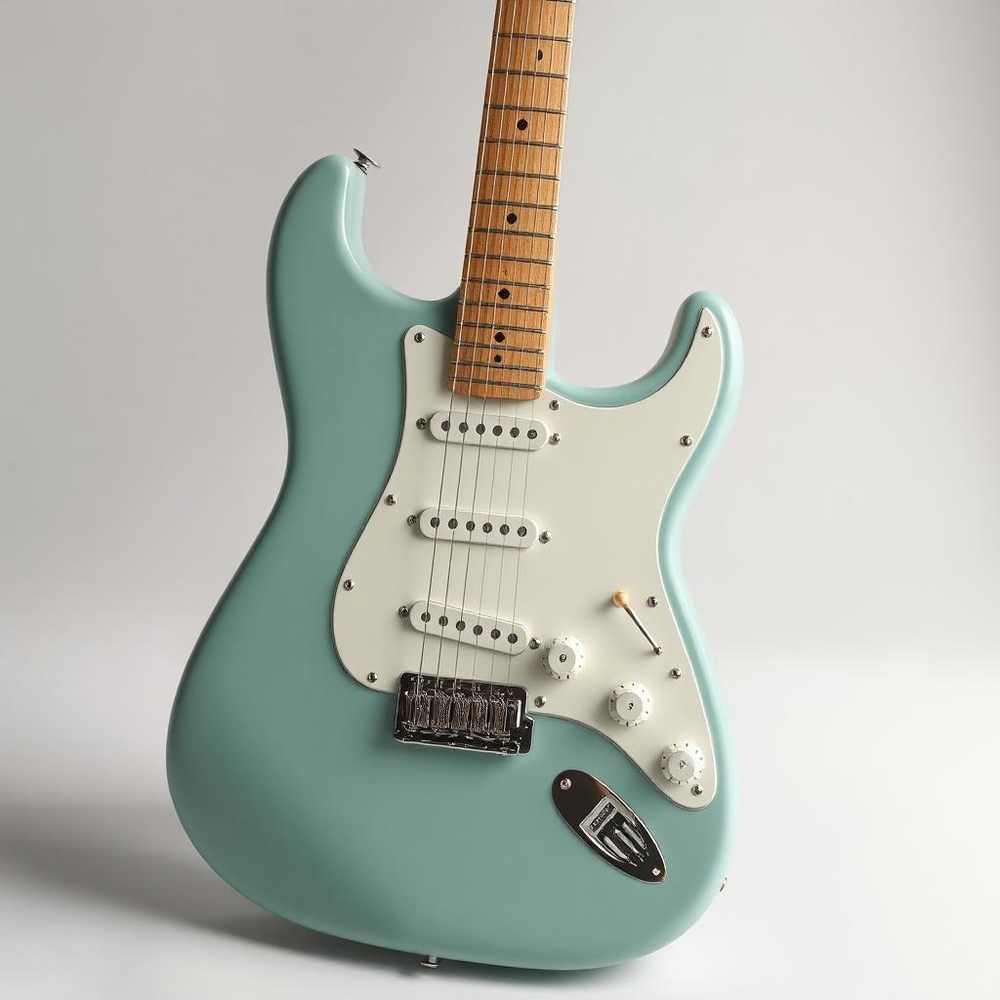
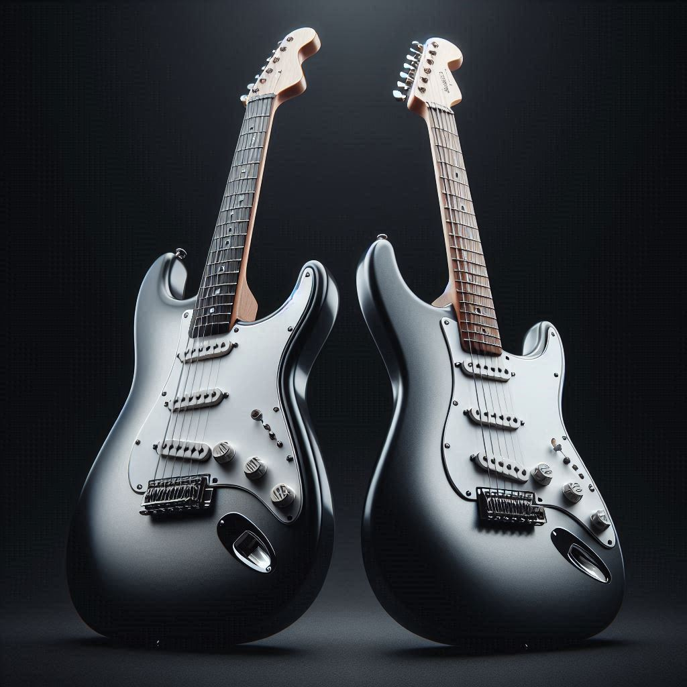

Fender Stratocaster
Categoría: Guitarra Eléctrica
Marca: Fender

Sea el centro de atención y experimente el sonido y el estilo icónicos de Fender® con la Player II Stratocaster®: una guitarra lista para el escenario con actualizaciones contemporáneas para potenciar su interpretación e inspirar su forma de tocar.
- Cuerpo: Aliso
- Acabado: Rojo brillante
- Mástil: Arce
- Diapasón: Palo de rosa
- Pastillas: 3 Single-Coil Fender
- Puente: Trémolo sincronizado



